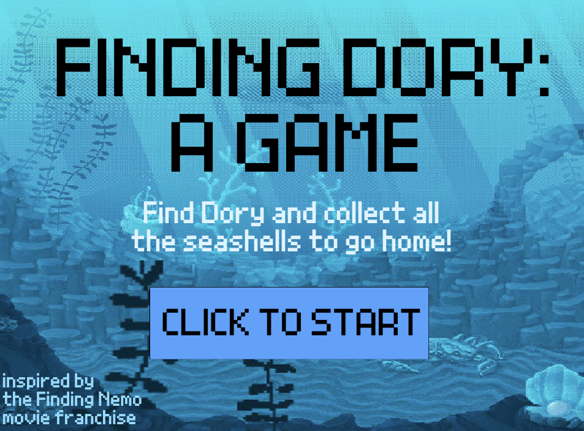
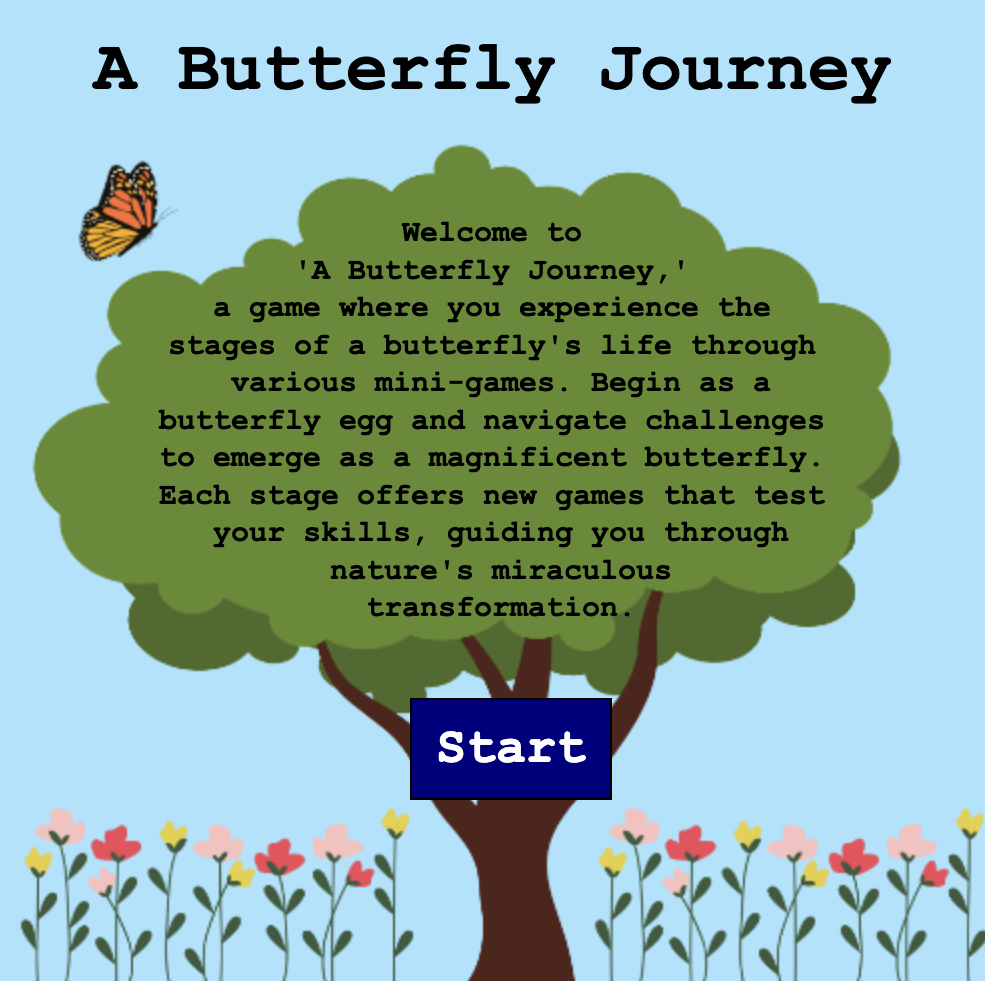

Finding Dory: A Game
Finding Dory: A Game is a short platformer game I created using Scratch. It was inspired by the Finding Nemo movie franchise, and created as a part of Harvard CS50's Problem Set 0.

A Butterfly Journey
A Butterfly Journey is a game I created using JavaScript. It contains a series of minigames, based on the process of metamorphosis. It was created as a final project for the GWC Summer Immersion Program. See code here.
Miscellaneous Projects
Here are some of my smaller projects, created for freeCodeCamp's Responsive Web Design Certification: